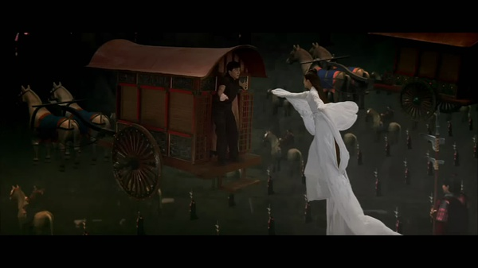

<!DOCTYPE html>
<html>
<head><meta name="generator" content="Hexo 3.9.0">
  <meta charset="utf-8">
  
  <title>神话 | TAJPURE</title>
  <meta name="mobile-web-app-capable" content="yes">
  <meta name="viewport" content="width=device-width">
  <meta name="description" content="昏昏沉沉的午觉后正好看见这部电影，成龙大哥05的片子了。小时候特别喜欢他拍的电影，又有功夫又非常搞笑，传达的还是非常正面积极的价值观。常常幻想着像他一样，学一身功夫去英雄救美。这部电影讲的是一个名叫Jake(前生是蒙毅)的人的前世今生。整部电影的情节显得十分的仓促，这可能是因为打戏的份量过多，而最后没有太多时间去好好诠释蒙毅(Jake)与玉漱之间感情的细微变化。对我而言，这并没有太影响观影质量">
<meta name="keywords" content="电影">
<meta property="og:type" content="article">
<meta property="og:title" content="神话">
<meta property="og:url" content="https://tajpure.com/2014/08/17/神话/index.html">
<meta property="og:site_name" content="TAJPURE">
<meta property="og:description" content="昏昏沉沉的午觉后正好看见这部电影，成龙大哥05的片子了。小时候特别喜欢他拍的电影，又有功夫又非常搞笑，传达的还是非常正面积极的价值观。常常幻想着像他一样，学一身功夫去英雄救美。这部电影讲的是一个名叫Jake(前生是蒙毅)的人的前世今生。整部电影的情节显得十分的仓促，这可能是因为打戏的份量过多，而最后没有太多时间去好好诠释蒙毅(Jake)与玉漱之间感情的细微变化。对我而言，这并没有太影响观影质量">
<meta property="og:locale" content="en">
<meta property="og:image" content="https://tajpure.com/image/fairy02.jpg">
<meta property="og:image" content="https://tajpure.com/image/fairy01.jpg">
<meta property="og:image" content="https://tajpure.com/image/fairy03.jpg">
<meta property="og:image" content="https://tajpure.com/image/fairy04.jpg">
<meta property="og:updated_time" content="2019-07-05T01:55:22.000Z">
<meta name="twitter:card" content="summary">
<meta name="twitter:title" content="神话">
<meta name="twitter:description" content="昏昏沉沉的午觉后正好看见这部电影，成龙大哥05的片子了。小时候特别喜欢他拍的电影，又有功夫又非常搞笑，传达的还是非常正面积极的价值观。常常幻想着像他一样，学一身功夫去英雄救美。这部电影讲的是一个名叫Jake(前生是蒙毅)的人的前世今生。整部电影的情节显得十分的仓促，这可能是因为打戏的份量过多，而最后没有太多时间去好好诠释蒙毅(Jake)与玉漱之间感情的细微变化。对我而言，这并没有太影响观影质量">
<meta name="twitter:image" content="https://tajpure.com/image/fairy02.jpg">
  
    <link rel="alternative" href="/atom.xml" title="TAJPURE" type="application/atom+xml">
  
  
    <link rel="icon" href="/favicon.ico">
  
  <link rel="stylesheet" href="/css/style.css">
  <!--[if lt IE 9]><script src="//html5shiv.googlecode.com/svn/trunk/html5.js"></script><![endif]-->
  
<script type="text/javascript">
  var _gaq = _gaq || [];
  _gaq.push(['_setAccount', 'tajpure@gmail.com']);
  _gaq.push(['_trackPageview']);

  (function() {
    var ga = document.createElement('script'); ga.type = 'text/javascript'; ga.async = true;
    ga.src = ('https:' == document.location.protocol ? 'https://ssl' : 'http://www') + '.google-analytics.com/ga.js';
    var s = document.getElementsByTagName('script')[0]; s.parentNode.insertBefore(ga, s);
  })();
</script>

  <script type="text/javascript" src="/js/material.min.js"></script>
  <link rel="stylesheet" href="/css/material.min.css" type="text/css">
  <link href="https://fonts.googleapis.com/icon?family=Material+Icons" rel="stylesheet">
</head>
</html>
<body>
  <div id="container">
    <div class="mobile-nav-panel">
	<ul class="nav mdl-menu mdl-js-menu mdl-menu--bottom-left mdl-js-ripple-effect" for="menubtn">
		<li  class="mdl-menu__item"><a href="/" style="color:#757575">Home</a></li><li  class="mdl-menu__item"><a href="/archives" style="color:#757575">Archives</a></li><li  class="mdl-menu__item"><a href="/about" style="color:#757575">About</a></li>
		<li  class="mdl-menu__item"><a href="/atom.xml"
			class="nav-icon" title="RSS Feed" style="color:#757575">RSS</a></li>
	</ul>
	<button id="menubtn" class="mdl-button mdl-js-button mdl-js-ripple-effect mdl-button--icon">
		<i class="material-icons" role="presentation">menu</i>
		<span class="visuallyhidden">show menu</span>
	</button>
</div>
<header id="header">
	<nav class="nav">
		<ul>
			<li><a href="/" style="color:#757575">Home</a></li><li><a href="/archives" style="color:#757575">Archives</a></li><li><a href="/about" style="color:#757575">About</a></li>
			<li><a href="/atom.xml"  class="nav-icon" style="color:#757575" title="RSS Feed">RSS</a></li>
		</ul>
	</nav>
</header>

    <div id="main">
      <article id="post-神话" class="post mdl-card mdl-shadow--2dp" style="width:100%;">
	
	<div class="entry-meta-header date">
		<time datetime="2014-08-17T09:54:51.000Z" itemprop="datePublished">Aug 17 2014</time>

  </div>
	<div class="mdl-card__title">
		
  
    <h1 class="article-title entry-title" itemprop="name">
      神话
    </h1>
  


	</div>
	<div class="mdl-card__supporting-text" style="margin-top: -1em">
		
    	<p>  昏昏沉沉的午觉后正好看见这部电影，成龙大哥05的片子了。小时候特别喜欢他拍的电影，又有功夫又非常搞笑，传达的还是非常正面积极的价值观。常常幻想着像他一样，学一身功夫去英雄救美。这部电影讲的是一个名叫Jake(前生是蒙毅)的人的前世今生。整部电影的情节显得十分的仓促，这可能是因为打戏的份量过多，而最后没有太多时间去好好诠释蒙毅(Jake)与玉漱之间感情的细微变化。对我而言，这并没有太影响观影质量，我觉得这部片子的亮点在于成龙大哥的幽默打风与歌曲(神话)，当然还有金大姐和那位印度妹子。<br><a id="more"></a><br>  电影中的蒙毅是一位非常忠心的将军，我甚至到最后也不知道他到底是为了秦皇而死还是为了玉漱而死。在玉漱为他跳那段舞的时候，我想我要是蒙毅就果断带着玉漱远走天涯了，反正别人也不知道我们是死是活。蒙毅与玉漱形成了鲜明的对比，一个只知效忠秦皇,似乎是英雄却是愚忠，是君权天授的世界里最受宣扬的人；另一个敢爱敢恨，为了蒙毅不惜放弃自己的“大义”，最后为蒙毅而生也为蒙毅而死。</p>
<p>  Jake，与其说是主角倒不如说是蒙毅与玉漱这场爱情的见证者。Jake不是蒙毅，所以玉漱含泪飞回陵宫，继续等待。</p>
<p>  再附上几张剧照：</p>
<p>  </p>
<p>  </p>
<p>  </p>
<p>  </p>

    
	</div>
	
    
<nav id="article-nav">
  
    <a href="/2014/08/25/八月二十五日诸事记/" id="article-nav-newer" class="article-nav-link-wrap">
      <strong class="article-nav-caption">Newer</strong>
      <div class="article-nav-title">
        
          八月二十五日诸事记
        
      </div>
    </a>
  
  
    <a href="/2014/08/09/闷骚/" id="article-nav-older" class="article-nav-link-wrap">
      <strong class="article-nav-caption">Older</strong>
      <div class="article-nav-title">
        
          闷骚
        
      </div>
    </a>
  
</nav>

  

	
	<section id="comments">
	  <div id="disqus_thread" style="padding:20px;">
	    <noscript>Please enable JavaScript to view the <a href="//disqus.com/?ref_noscript">comments powered by Disqus.</a></noscript>
	  </div>
	</section>
	
</article>

    </div>
    <!-- <div class="mb-search">
  <form action="//google.com/search" method="get" accept-charset="utf-8">
    <input type="search" name="q" results="0" placeholder="Search">
    <input type="hidden" name="q" value="site:tajpure.com">
  </form>
</div> -->
<footer id="footer">
	<span class="copyright">
    &copy; 2012-2019 tajpure<br>
	</span>
  <br>
	<!-- ICON NEEDS FONT AWESOME FOR CHEVRON UP ICON -->
	<link href="//netdna.bootstrapcdn.com/font-awesome/3.2.1/css/font-awesome.css" rel="stylesheet">
	<a href="javascript:" id="return-to-top"><i class="icon-chevron-up"></i></a>
</footer>

    
<script>
  var disqus_shortname = 'tajpure';
  
  var disqus_url = 'https://tajpure.com/2014/08/17/神话/';
  
  (function(){
    var dsq = document.createElement('script');
    dsq.type = 'text/javascript';
    dsq.async = true;
    dsq.src = '//go.disqus.com/embed.js';
    (document.getElementsByTagName('head')[0] || document.getElementsByTagName('body')[0]).appendChild(dsq);
  })();
</script>


<script src="https://www.tajpure.com/js/jquery.min.js"></script>


<script src="/js/script.js"></script>

  </div>
</body>
</html>
